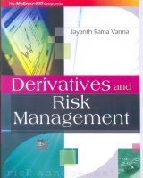
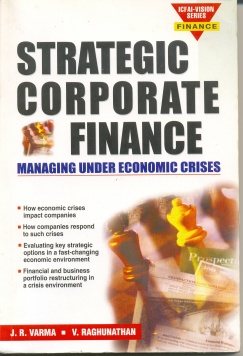
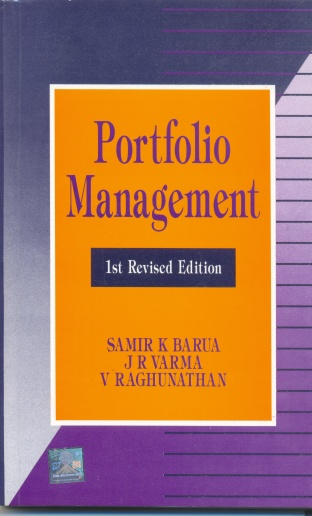
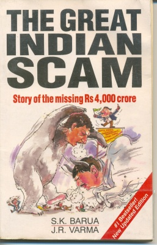

The Indian Fama-French-Momentum Website is here

Derivatives and Risk Management New Delhi, Tata McGraw Hill, 2009.

Strategic Corporate Finance: Managing Under Economic Crises New Delhi, Vision Books, 2001 (with V. Raghunathan).

Portfolio Management New Delhi, Tata McGraw Hill, 1992 (with S.K. Barua and V. Raghunathan). First revised edition 1996.

The Great Indian Scam: The Story of the Missing Rs. 4000 crore New Delhi, Vision Books, 1993 (with S.K. Barua).
"Choice of margin period of risk and netting for computing margins in central counterparty clearinghouses: a Monte Carlo investigation", Journal of Financial Market Infrastructures (2021), 10(2) (with Virmani, V.) [Abstract]
"Lottery and bubble stocks and the cross-section of option-implied tail risks", Journal of Futures Markets (2021), (with Agarwalla S.K., Saurav, S.) [Abstract]
"Rational repricing of risk during COVID‐19: Evidence from Indian single stock options market", Journal of Futures Markets (2021), (with Agarwalla S.K., Virmani, V.) [Abstract]
"The impact of COVID-19 on tail risk: Evidence from Nifty index options", Economics Letters (2021), (with Agarwalla S.K., Virmani, V.) [Abstract]
"Betting Against Beta in the Indian Market", in Mishra A.K., Arunachalam V., Mohapatra S., Olson D. (eds) The Financial Landscape of Emerging Economies (2020), (with Agarwalla S.K., Jacob J., Vasudevan E.) [Abstract]
"Blockchain in Finance", Vikalpa, 44.1 (2019) 1-11 [Abstract]
"Informed trading around earnings announcements - Spot, futures, or options?", Journal of Futures Markets, 39.5 (2019) 579-589 (with Sonali Jain, Sobhesh Kumar Agarwalla and Ajay Pandey) [Abstract]
"Indian equity options: Smile, risk premiums, and efficiency", Journal of Futures Markets, 39.2 (2019), 150-163 (with Sonali Jain and Sobhesh Kumar Agarwalla) [Abstract]
"Bitcoin and Blockchain", Global Business Press Expert Insights, 2018 [Abstract]
"Structured Products for Corporate Risk Management", Global Business Press Expert Insights, 2018 (with Vineet Virmani) [Abstract]
"Size, Value, and Momentum in Indian Equities", Vikalpa, 42(4), October-December 2017, 211–219 (with Sobhesh Kumar Agarwalla and Joshy Jacob) [Abstract]
"Finance in a World of Negative Rates", Global Business Press Expert Insights, 2016 (with Vineet Virmani) [Abstract]
"Computational Finance Using QuantLib-Python", Computing in Science & Engineering, 18.2 (2016): 78-88 (with Vineet Virmani) [Abstract] [Full Text - PDF (Accepted Paper Version) ]
"Financial Literacy among Working Young in Urban India", World Development, Volume 67, March 2015, Pages 101–109 (with S. K. Agarwalla, S. K. Barua and J. Jacob) [Abstract] [Full Text - PDF (Working Paper Version) ]
"Indian Financial Market Development and Regulation: What Worked and Why?", in Masahiro Kawai and Eswar Prasad (ed), , Asian Perspectives on Financial Sector Reforms and Regulation, Brookings Institution Press, 2011 [Abstract]
"Finance Teaching and Research after the Global Financial Crisis", Vikalpa, October-December 2011 [Abstract] [Full Text - PDF (Working Paper Version) ]
"Risk Management Lessons from the Global Financial Crisis for Derivative Exchanges", in Robert W. Kolb (ed.), , Lessons from the Financial Crisis: Causes, Consequences and Our Economic Future, Kolb Series in Finance, New Jersey: John Wiley, 2010, 317-323 [Abstract]
"Indian Financial Sector and the Global Financial Crisis", Vikalpa, July-September 2009, 34(3), 25-34 [Abstract]
"Satyam Fraud: The Regulatory Response", in “The Satyam Story: Many Questions and A Few Answers”, , Vikalpa, January-March 2009, 34(1), 75-77 [Abstract]
"Corporation and its Shareholders: What Should B-Schools Teach? (Colloqium)", Vikalpa, 31(2), April-June 2006, 120-121 [Abstract]
"Selected Issues in the Regulation of Firms and Capital Markets", in Priya Basu (ed), , India’s Financial Sector: Recent Reforms, Future Challenges, Macmillan, New Delhi, 2005. [Abstract]
"Development Financial Institutions and the Development of Financial Markets", in S. Morris (ed.), , India Infrastructure Report 2004: Ensuring Value for Money, Oxford University Press, New Delhi. [Abstract]
"Equity Options in India: An Empirical Examination", in Susan Thomas (ed), , Derivative Markets in India 2003, Tata McGraw Hill, New Delhi, 2003. [Abstract]
"Putting ‘Private Finance’ back into the Private Finance Initiative", in S. Morris (ed.), , India Infrastructure Report 2003: Public Expenditure Allocation and Accountability, Oxford University Press, New Delhi. [Abstract] [Full Text - PDF ]
"Governance, Supervision and Market Discipline: Lessons from Enron", Journal of the Indian School of Political Economy, October-December 2002, 14(4), 559-632. [Abstract] [Full Text - PDF ]
"Comments on ‘Governance, Supervision and Market Discipline: Lessons from Enron’ and the Author’s Response", Journal of the Indian School of Political Economy, October-December 2002, 14(4), 633-644 [Full Text - PDF ] (This contains comments by Dr. N. Balasubramaniam, Dr. Ajay Shah and Dr. Ashok Desai on the previous paper as well as the author's response to these comments)
"Private Finance to Private Entrepreneurship", in S. Morris (ed.), , India Infrastructure Report 2002: Governance Issues for Commercialization, Oxford University Press, New Delhi. [Abstract] [Full Text - PDF ]
"Regulatory Dilemmas in Infrastructure Financing", in S. Morris (ed.), , India Infrastructure Report 2001: Issues in Regulation and Market Structure, Oxford University Press, New Delhi. [Abstract] [Full Text - PDF ]
"Modelling Credit Risk in Indian Bond Markets", ICFAI Journal of Applied Finance, 6(3), July 2000, 53-67 [Abstract] [Full Text - PDF ]
"Rupee-Dollar Option Pricing and Risk Measurement: Jump Processes, Changing Volatility and Kurtosis Shifts", Journal of Foreign Exchange and International Finance, 13 (1), April-June 1999, 11-33 [Abstract] [Full Text - PDF ]
"Asian Crisis and Finance Theory", Vikalpa, 23(4), October-December 1998, 23-34 [Abstract] [Full Text - PDF ]
"Indian Financial Sector Reforms: A Corporate Perspective", Vikalpa, 23(1), January-March 1998, 27-38. [Abstract] [Full Text - PDF ]
"Corporate Governance in India: Disciplining the Dominant Shareholder", IIMB Management Review,, 9(4), 5-18. October-November 1997. [Abstract] [Full Text - PDF ]
"Indian Money Market: Market Structure, Covered Parity and Term Structure", ICFAI Journal of Applied Finance, 3(2), July 1997, 1-10 [Abstract] [Full Text - PDF ]
"Impact of the Budget on the Capital Markets", Vikalpa, April-June 1997, 19-21 (with V. Raghunathan)
"A Comparative Analysis of Response of International Capital Markets to Political Upheaval", Global Business and Finance Review, Spring 1997, 51-60 (with S. K. Barua and M. R. Gujarathi) [Abstract]
"The Stochastic Dynamics of the Short Term Interest Rate in India", Indian Journal of Applied Economics, 6(1), January-March 1997, 47-58 [Abstract] [Full Text - PDF ]
"Bond Valuation and the Pricing of Interest Rate Options in India", ICFAI Journal of Applied Finance,, 2(2), July 1996, 161-176 [Abstract] [Full Text - PDF ]
"Speculative Dynamics: The Case of Mastershares", Advances in Financial Planning and Forecasting, Vol 5, 1994, Jai Press, Greenwich, CT, USA (with S.K. Barua)
"Analysis of the Indian Securities Industry: Market for Debt", Vikalpa, 19(3), July-September 1994, 3-22 (with S.K. Barua, V. Raghunathan and N. Venkiteswaran)
"Research on the Indian Capital Market: A Review", Vikalpa, 19(1), January-March 1994, 15- 31 (with S.K. Barua and V. Raghunathan) [Full Text - PDF ]
"RBI Autonomy and the Indian Financial Sector", Vikalpa, 18(4), October-December 1993 (with S.K. Barua)
"Book Review: Indian Shareholders: A Survey by L.C. Gupta", Vikalpa, 18(4), October- December 1993, 70-2
"Book Review: Stock Exchange Trading in India; Agenda for Reform by L.C. Gupta", Vikalpa, 18(2), April-June 1993, 70-2.
"Securities Scam: Genesis, Mechanics and Impact", Vikalpa, 18(1), January-March 1993, 3- 12 (with S.K. Barua) [Full Text - PDF ]
"Computer Graphics, Peripheral Vision and Non Euclidean Geometry", Computers and Graphics, 16(3), 1992, 253-258
"Crisil Rating: When Does AAA Mean B?", Vikalpa, 17(2), April-June 1992, 35-42 (with V. Raghunathan)
"The Economic Package and the Agenda for Restructuring the Financial Sector", Vikalpa, Vol 16, No.3 July - September 1991 (with V. Raghunathan and N. Venkiteswaran)
"A Regulatory Framework for Mutual Funds", Economic and Political Weekly, XXVI (May 25, 1991), M55-59 (with S.K. Barua and N. Venkiteswaran)
"Mastershares: A Bonanza for Large Investors", Vikalpa, 16(1), January-March 1991, 29-34 (with S.K. Barua)
"Guidelines on Share Valuation: How Fair is Fair Value?", Vikalpa, 15 (4), October- December 1990, 3-10 (with N. Venkiteswaran)
"Signs of incipient capital flight?", DNA, March 8, 2013 [Related blog entry]
"Disguised Capital Flight and Current Account Deficit", The Efficient Frontier, March 2013 [Abstract]
"Corporate Hedging and Distorted Benchmarks", CFO Connect, August 2012 [Abstract]
"Exit policy for financial institutions", Mint, April 16, 2012 [Related blog entry]
"Go regional, then global", Financial Express, February 22, 2011 [Related blog entry]
"Complete that demat process", Financial Express, January 19, 2011 [Related blog entry]
"Jalan wants to kill the exchanges", Financial Express, November 30, 2010 [Related blog entry]
"Learning from Buffet", Financial Express, November 24, 2010 [Related blog entry]
"Autopsy gone wrong", Financial Express, October 15, 2010 [Related blog entry]
"Not a ‘fit and proper’ debate”", Financial Express, September 24, 2010 [Related blog entry]
"Don’t bank on size, don’t fear failure”", Financial Express, August 13, 2010 [Related blog entry]
"Dealing with regulatory fisticuffs”", Financial Express, July 21, 2010 [Related blog entry]
"Why we need better market surveillance”", Financial Express, June 16, 2010 [Related blog entry]
"Does Wall Street serve any purpose?”", Financial Express, May 5, 2010 [Related blog entry]
"Let courts sort out Sebi Irda dispute”", Financial Express, April 17, 2010 [Related blog entry]
"Fill the gaps with apex regulator”", Financial Express, March 19, 2010 [Related blog entry]
"These tax changes don’t need a code”", Financial Express, February 19, 2010 [Related blog entry]
"Listen to Volcker on regulation”", Financial Express, January 26, 2010 [Related blog entry]
"In finance, we are now coupled”", Financial Express, December 29, 2009 [Related blog entry]
"Sometimes, banks will end up failing", Financial Express, December 23, 2009 [Related blog entry]
"Settle for new systems or suffer", Financial Express, December 2, 2009 [Related blog entry]
"Googling to regulate finance firms", Financial Express, October 19, 2009 [Related blog entry]
"Don’t believe you can’t be hurt", Financial Express, September 15, 2009 [Related blog entry]
"Those fixed rate, 30 yr home loans", Financial Express, August 22, 2009 [Related blog entry]
"Why RBI’s logic on DMO does not hold", Financial Express, July 23, 2009 [Related blog entry]
"The problem with deficit? Tight money", Financial Express, July 17, 2009 [Related blog entry]
"Almost like Rajan", Financial Express, June 19, 2009 [Related blog entry]
"Still Efficient", Financial Express, April 1, 2009 [Abstract]
"Accounting for blue chips", Financial Express, March 2, 2009 [Related blog entry]
"Towards a new code", Financial Express, February 5, 2009 [Related blog entry]
"Open the books", Financial Express, January 22, 2009 [Related blog entry]
"India in a ZIRP world", Financial Express, January 3, 2009 [Related blog entry]
"Sovereign limitations", Financial Express, December 12, 2008 [Related blog entry]
"Show me the balance sheet", Financial Express, November 27, 2008 [Related blog entry]
"Liquidity or solvency?", Financial Express, November 12, 2008 [Related blog entry]
"Bubble in our backyard", Financial Express, October 11, 2008 [Related blog entry]
"Back to Basics", Asian Banker, March 2008 [Abstract] [Full text - Scanned Image]
"Is it time to start an OTC derivatives market?", Business Standard, November 14, 2007 [Abstract] [Full text - Downloaded from Business Standard web site]
"More noise, less effect", Business Standard, October 19, 2007 [Abstract] [Full text - Downloaded from Business Standard web site]
"Internal Capital: Best Practices", CFO Connect, April-May 2007 [Abstract]
"Making the long view count", Financial Express, March 1, 2007 [Abstract] [Full text - Downloaded from Financial Express web site]
"A year of uncertainty and volatility", DNA, January 3, 2007 [Abstract]
"Allow Foreign Investment in SEs?", Economic Times, November 27, 2006 [Abstract] [Full text - Downloaded from Economic Times web site]
"A Solution to the Financial Last Mile Problem", CFO Connect, September-October 2006 [Abstract] [Full text - Scanned Image]
"On Nasdaq, LSE and extra-territoriality", DNA Money, September 25, 2006 [Abstract] [Full text - Scanned Image]
"It won’t reduce volatility, but create a vibrant market", Financial Express, June 26, 2006 [Abstract] [Full text downloaded from Financial Express web site]
"Reconnecting Directors to the Company", CFO Connect, May-June 2006 [Abstract] [Full text - Scanned Image] [Full text - As Submitted]
"Sebi norms largely okay", Financial Express, April 4, 2006 [Abstract]
"The crux of the MATter: capital gains tax is back", Financial Express, March 1, 2006 [Abstract] [Full text - Scanned Image]
"Reliance Demerger as Backdoor Delisting", Financial Express, February 13, 2006 [Abstract] [Full text downloaded from Financial Express web site]
"Rethinking Risk", CFO Connect, January-February 2006 [Abstract] [Full text - Scanned Image]
"Yes, time to lay a road map for implementing T+1 (in Should Sebi implement the T+1 settlement system in the capital market?)", Financial Express, October 17, 2005 [Abstract] [Full text downloaded from Financial Express web site]
"Short-selling curbs help rig share prices (in Should short-selling be reintroduced?)", Economic Times, October 3, 2005 [Abstract] [Full text downloaded from Economic Times web site]
"FSA order on Citigroup misguided", Financial Express, July 20, 2005 [Abstract] [Full text downloaded from Financial Express web site]
"We have seen a dismal failure to make material disclosures to the public", Financial Express, June 20, 2005 [Abstract] [Full text downloaded from Financial Express web site]
"Making Customers Pay for Regulatory Services", Business Line, August 30, 2004 [Abstract] [Full text downloaded from Business Line web site]
"Should govt hold special audit?", Economic Times, August 18, 2004 [Abstract]
"Stabilization or Socialization", Business Standard, June 21, 2004 [Abstract] [Full text downloaded from Business Standard web site]
"Electronic Transparency", Business Standard, April 12, 2004 [Abstract] [Full text downloaded from Business Standard web site]
"Stock lending is need of the hour", Business Line, March 15, 2004 [Abstract] [Full text downloaded from Business Line web site]
"Discretion in margins", Business Standard, March 1, 2004 [Abstract] [Full text downloaded from Business Standard web site]
"Should Sebi ban unregulated hedge funds?", Economic Times, January 27, 2004 [Abstract] [Full text downloaded from Economic Times web site]
"Cash versus physical settlement", Business Standard, January 19, 2004 [Abstract] [Full text downloaded from Business Standard web site]
"Insider trading should be a civil offence", Business Standard, October 06, 2003 [Abstract] [Full text downloaded from Business Standard web site]
"Rerating the Ratings", Business Today, December 7-21, 1997, 144-149 (with V. Raghunathan) [Abstract]
"The Union budget: Reforms are back on rails", Times of India, March 4, 1997 (with V. Raghunathan) [Abstract]
"Impact on Sensex of Double Tax on Dividends", Business Standard, February 27, 1997 (with V. Raghunathan) [Abstract]
"Leasing Economics Under MAT", Economic Times, February 17, 1997 (with V. Raghunathan) [Abstract]
"A Scam Screaming to Happen", Business Standard, February 6, 1997 (with V. Raghunathan) [Abstract]
"The bootless bull chase", Economic Times, November 7, 1996 [Abstract]
"The Unfinished Agenda", Business Standard, October 21, 1996 [Abstract]
"Takeover Code: Less Than What Meets the Eye", Economic Times, September 18, 1996 [Abstract]
"Yankee Bonds: Triumph of Pessimism", Business Standard, September 10, 1996 [Abstract]
"Do Barriers Work", Business Standard, August 5, 1996 (with S. K. Barua) [Abstract]
"The Missing Ingredient", Economic Times, August 2, 1996 (with Vivek Moorthy) [Abstract]
"The Ghost Who Haunts", Business Standard, June 27, 1996 (with S. K. Barua) [Abstract]
"Misleading Investors with Impunity", The Hindu, May 22, 1996 [Abstract]
"For Mutual Freedom", Business Today, May 22-June 6, 1996 (with V. Raghunathan).
"What Does Your Capital Cost?", Chartered Financial Analyst, March 1996 (with V. Raghunathan).
"Mutual Funds: Product Innovation", Chartered Financial Analyst, January 1996 (with V. Raghunathan).
"Trial by Bourses Unfair", Economic Times, January 8, 1996 (with V. Raghunathan).
"Reliance-BSE Deal - Ducking the Real Issue", Economic Times, January 5, 1996 (with V. Raghunathan).
"Mutual Funds at the Cross-roads", The Hindu, August 16, 1995 (with V. Raghunathan).
"Vulture Funds", Chartered Financial Analyst, September 1995 (with V. Raghunathan).
"Malegam Panel Suggestions on Accounting Norms in Prospectuses", The Hindu,, August 2, 1995 (with V. Raghunathan).
"How Vulture Funds Can Rescue Indian Banking", The Economic Times, July 29, 1995 (with S. K. Barua).
"Bad Loans Write off: Accepting the Inevitable", The Hindu, July 6, 1995.
"The MS Shoes Bank of India", The Economic Times, June 21, 1995 (with V. Raghunathan).
"The Shoe that Pinched", Business Today, May 22 - June 6, 1995 (with V. Raghunathan).
"The Reformed Badla System", The Hindu, April 6, 1995 (with V. Raghunathan).
"The Peso Parallel", Business Today, February 7-21, 1995 (with V. Raghunathan).
"A Vote for the Funds", Business Today, December 22- January 6, 1995 (with V. Raghunathan).
"A Barometer for Bonds", Business Today, April 22 - May 6, 1994 (with V. Raghunathan).
"Futures and Options: A Hasty Move", Economic Times, February 2, 1994 (with S.K. Barua).
"Rating the Ratings", Business Today, January 22- February 6, 1994 (with V. Raghunathan).
"SEBI Comes down on Bulls to Punish the Bears", Economic Times, January 4, 1994 (withS.K. Barua).
"MNCs Must be Subjected to SEBI Acquisition Code", Economic Times, November 17, 1993 (with S.K. Barua).
"FERA in Reverse Gear; MNCs Strike Gold", Economic Times, November 12, 1993 (with S.K. Barua).
"SEBI Needs a Code of Conduct", Financial Express, September 10, 1993 (with S.K. Barua).
"Scam: Don’t Draw the Wrong Lessons", Economic Times, August 23, 1993 (with S.K. Barua).
"Reforms Now Irreversible", Economic Times, February 28, 1993 (with S.K. Barua).
"Why the Dollars are Not Flowing into India", The Independent, November 23, 1992 (with V. Raghunathan).
"Confusion over Free Pricing", The Independent, September 26, 1992.
"Tainted Shares: Pecunia Non Olet", The Independent, August 29, 1992 (with V. Raghunathan).
"SEBI’s Draft : Towards More Transparency", Economic Times, June 9th and June 10th 1992 (with V. Raghunathan and M.C. Bhatt).
"Narasimham Committee Report - More Room for Manoeuvre", Economic Times, February 10, 1992 (with V. Raghunathan, A.Korwar and M.C. Bhatt).
"Evaluation of Portfolio Performance", Dalal Street Journal, Sept. 9-22,1991.
"Bond Portfolios", Dalal StreetJournal, August 12-25, 1991.
"Portfolio Design: Equity Portfolio", Dalal Street Journal, August 26-Sept. 8, 1991.
"High Frequency Manipulation at Futures Expiry: The Case of Cash Settled Indian Single Stock Futures", IIMA Working Paper No. 2014-02-01, February 2014 (with S. K. Agarwalla and J. Jacob) [Abstract] [Full Text - PDF ]
"Four factor model in Indian equities market", IIMA Working Paper No. 2013-09-05, September 2013 (with S. K. Agarwalla and J. Jacob) [Abstract] [Full Text - PDF ]
"Time Resolution of the St. Petersburg Paradox: A Rebuttal", IIMA Working Paper No. 2013-05-09, May 2013 [Abstract] [Full Text - PDF ]
"When index dissemination goes wrong: How fast can traders add and multiply?", IIMA Working Paper No. 2010-08-04, August 2010 [Abstract] [Full Text - PDF ]
"Risk Management Lessons from the Global Financial Crisis for Derivative Exchanges", IIMA Working Paper No. 2009-02-06, February 2009 [Abstract] [Full Text - PDF ]
"A First Cut Estimate of the Equity Risk Premium in India", IIMA Working Paper No. 2006-06-04, June 2006 (with S. K. Barua) [Abstract] [Full Text - PDF ]
"Towards a Unified Market for Trading Gilts in India", IIMA Working Paper No. 2004-11-05, November 2004 [Abstract] [Full Text - PDF ]
"The Indian Financial Sector After a Decade of Reforms", ViewPoint 3, Centre for Civil Society, New Delhi, April 2002. [Abstract] [Full Text - PDF ]
"Mispricing of Volatility in the Indian Index Options Market", IIMA Working Paper No. 2002-04-01, April 2002 [Abstract] [Full Text - PDF ]
"Regulatory Implications of Monopolies in the Securities Industry", IIMA Working Paper, 2001-09-05, September 2001 [Abstract] [Full Text - PDF ]
"Value at Risk Models in the Indian Stock Market", IIMA Working Paper, 99-07-05, July 1999 [Abstract] [Full Text - PDF ]
"Comparison of Indian Accounting Standards with International Practices", paper presented at the International Accounting Standards Conference, Association of Chartered Certified Accountants and the Indian Institute of Management, Ahmedabad, July 16-17, 1999, (with V. Raghunathan) [Abstract]
"The Debt Market and Corporate Financing Decisions", Paper presented at the Ninth State Level Conference, Karnataka State Chartered Accountants Association, Bangalore, February 1997 [Abstract]
"Impact on Sensex of Scrapping Double Taxation of Dividends", IIMA Working Paper, 1352, February 1997. (with V. Raghunathan) [Full Text - PDF ]
"Financial Sector Reforms: The Unfinished Agenda", Paper presented at the Seminar on Economic Reforms: The Next Step at Rajiv Gandhi Institute for Contemporary Studies, New Delhi, October 2-4, 1996 [Abstract]
"Indian Interest Rate Dynamics and the Pricing of Options", UTI-IIMB Centre for Capital market Education and Research, Working Paper 1/96, Indian Institute of Management, Bangalore, May 1996 [Abstract]
"Financial Sector Reform: Institutional and Technological Imperatives", Conference on Social Norms, Institutional Structures and Development Policy at the Indira Gandhi Institute of Development Research, Bombay, February 1994, Working Paper No. 1177, Indian Institute of Management, Ahmedabad, February 1994. (with S. K. Barua) [Full Text - PDF ]
"Banking Reforms: Implementation Issues", study for the Finance Minister, July 1993
"Commercial Banking: New Vistas, New Priorities", Seminar on Reform of Commercial Banking, Ministry of Finance, Department of Economic Affairs, New Delhi, November 1992.
"Gorbachev Betas: The Russian Coup and the Market Blues", IIMA Working Paper No. 1054, September 1992 (with S.K. Barua)
"Comments on SEBI’s Draft Takeover Code", IIMA Working Paper No. 1010, February 1992. (with V. Raghunathan and M.C. Bhatt) [Full Text - PDF ]
"Narasimham Committee Report - Some Further Ramifications and Suggestions", IIMA Working Paper No. 1009, February 1992. (with V. Raghunathan, A.Korwar and M.C. Bhatt) [Full Text - PDF ]
"Indian Convertible Bonds with Unspecified Terms: A Valuation Model", IIMA Working Paper No. 991, Indian Institute of Management, Ahmedabad, December 1991 (with S.K. Barua) [Full Text - PDF ]
"Indian Convertible Bonds with Unspecified Terms: An Empirical Study", IIMA Working Paper No. 990, Indian Institute of Management, Ahmedabad, December 1991 (with S.K. Barua and T. Madhavan) [Full Text - PDF ]
"Is the BSE Sensitive Index Better than the National Index", IIMA Working Paper No. 988, Indian Institute of Management, Ahmedabad, December 1991 [Full Text - PDF ]
"A Valuation Model for Indeterminate Convertibles", IIMA Working Paper No. 957, Indian Institute of Management, Ahmedabad, August 1991 [Full Text - PDF ]
"Market Valuation Model Under Differential Taxes, Inflation, Recurring Investments and Flotation Costs", IIMA Working Paper No. 956, Indian Institute of Management, Ahmedabad, August 1991 (with V. Raghunathan)
"Expert System for Cost Variance Investigation", IIMA Working Paper No. 895, Indian Institute of Management, Ahmedabad, September 1990
"The Existence and Continuity of Utility Functions: A New Proof", IIMA Working Paper No. 819, Indian Institute of Management, Ahmedabad, August 1989 [Full Text - PDF ]
"Where Utility Functions Do Not Exist: A Note on Lexicographic Orders", IIMAWorking Paper No. 818, Indian Institute of Management, Ahmedabad, August 1989 [Full Text - PDF ]
"Equilibrium Pricing of Special Bearer Bonds", IIMA Working Paper No. 817, Indian Institute of Management, Ahmedabad, August 1989 [Full Text - PDF ]
"Estimation Errors and Time Varying Betas in Event Studies - A New Approach", IIMA Working Paper No. 759, Indian Institute of Management, Ahmedabad, July 1988 (with S.K. Barua) [Full Text - PDF ]
Nayan Parikh & Consultants: Loan against Shares Case written in 2021 Abstract
Governance at ICICI Bank: Chairman's Dilemma Case written in 2021 Abstract
Startup Financing Issues Case written in 2021 Abstract
Northern Textiles Limited (A) Case written in 2021 Abstract
Northern Textiles Limited (B) Case written in 2021 Abstract
Reliance Communications: On the Brink of Bankruptcy Case written in 2021 Abstract
Prime Broking Default at the National Stock Exchange (with Sobhesh Agarwalla) Case written in 2020 Abstract
Tezos: Governance in the Cryptocurrency World (with Samir Barua) Case written in 2020 Abstract
Swap Curve Steepener (with Vineet Virmani) Case written in 2017 Abstract
Hundred Million Dollar Beta (with Vineet Virmani) Case written in 2016 Abstract
Swiss Roll - A (with Vineet Virmani) Case written in 2016 Abstract
Swiss Roll - B (with Vineet Virmani) Case written in 2016 Abstract
Angels and Crowds (with Joshy Jacob) Case written in 2015 Abstract
The Mispriced ADRs of Allied Irish Banks (with Joshy Jacob) Case written in 2014 Abstract
Great Northern Iron Ore Properties (with Joshy Jacob) Case written in 2014 Abstract
MotherRock LP: Natural Gas Calendar Spread Case written in 2013 Abstract
Hedging Cross Border Commodity Price Risk Case written in 2013 Abstract
Pitfalls in Single Stock Futures Case written in 2013 Abstract
Hedging using Target Redemption Forward Case written in 2013 Abstract
JPMorgan Chase and the London Whale Case written in 2013 Abstract
General Electric and GE Capital (with Joshy Jacob) Case written in 2011 Abstract
Cases in Market Manipulation and Regulatory Violations Case written in 2011 Abstract
ICICI Equity Issue 2007 (with Sobhesh K. Agrawalla and Joshy Jacob) Case written in 2010 Abstract
Mizuho Securities and other trading errors Case written in 2010 Abstract
Vedanta Resources plc. Case written in 2008 Abstract
Fannie Mae: Accounting for Interest Rate Caps. Case written in 2005 Abstract
Wipro's Billion Dollar Hedge. Case written in 2005 Abstract
Ashanti Goldfields Company Limited (with Samir K. Barua). Case written in 1999 (revised in 2002) Abstract
Arvind Mills Limited. Case written in 1999 Abstract
Bank NISP (with V. Raghunathan and Chetan Bhagat). Case written in 1998 (revised in 2000) Abstract
Daewoo Group. Case written in 1998 (revised in 2000) Abstract
Siam Cement Public Company Limited (with V. Raghunathan). Case written in 1998 (revised in 2000) Abstract
Phatra Thanakit Public Company Limited (with V. Raghunathan) Case written in 1998 (revised in 2000) Abstract
SK Securities (with V. Raghunathan). Case written in 1998 (revised in 2000) Abstract
Eurotunnel: Debt Renegotiation (with N. Venkiteswaran). Case written in 1997 Abstract
Eurotunnel: Foreign Exchange Exposure, 1997. Case written in 1997 Abstract
Aokam Perdana Berhad (with V. Raghunathan). Case written in 1997 Abstract
Reliance Industries Limited: Global Financing Decisions Case written in 1997 Abstract
Coimbatore Yarns' Mark Receivables (A) and (B) (with S. K.Barua) Case written in 1997 Abstract
Essar Steel Limited (1996) Case written in 1997 Abstract
Essar Steel Limited (1994): Comparing Cost of Funds Case written in 1997 Abstract
Essar Steel Limited (1993): Valuation of Euro Convertible Bonds Case written in 1994 (revised in 1997) Abstract
TISCO Rights Issue (A): Hobson's Choice (with Samir K. Barua) Case written in 1992 Abstract
TISCO Rights Issue (B): Strength of Foundations (with Samir K. Barua) Case written in 1992 Abstract
TISCO Rights Issue (D): The Elusive Beta (with Samir K. Barua) Case written in 1992 Abstract
TISCO Rights Issue (E): Unstable (?) Betas (with Samir K. Barua) Case written in 1992 Abstract
Of (Human) Bond(age) (with Samir K. Barua) Case written in 1990 Abstract
Razor's Edge 1990 (with Samir K. Barua) Case written in 1990 Abstract
{kind=link}
{kind=link}
{kind=link}